Admin tab¶
Administrative users can use the Admin tab to view usage and to manage instances, volumes, flavors, images, networks, and so on.
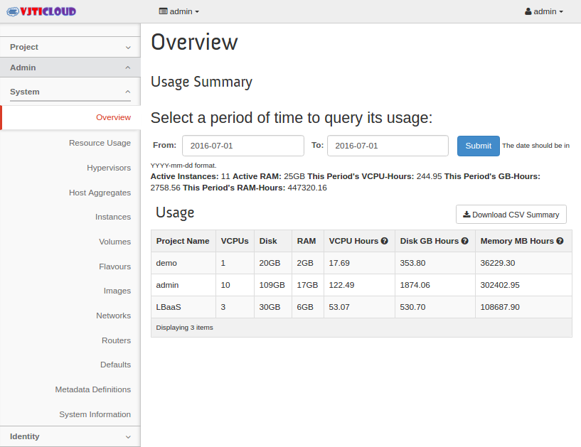
From the Admin tab, you can access the following category to complete these tasks:
System tab¶
- Overview:
- View basic reports.
- Resource Usage:
- Use the following tabs to view the following usages:
- Usage Report:
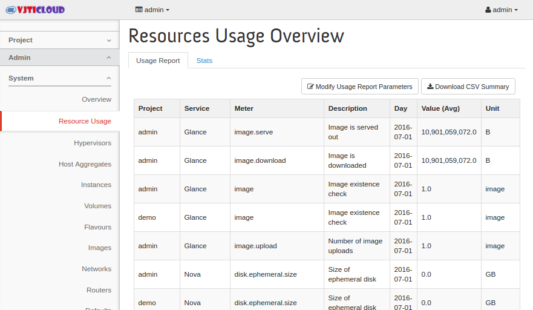View the usage report.
- Stats:
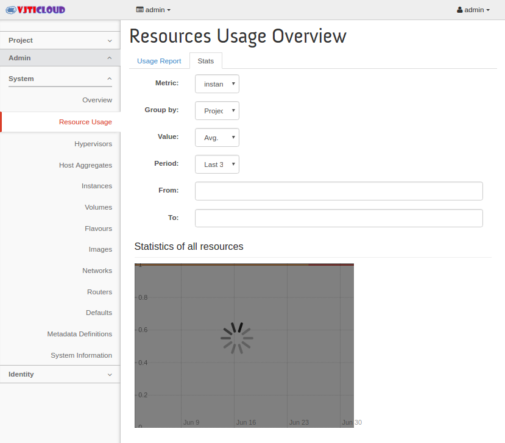View the statistics of all resources.
- Hypervisors:
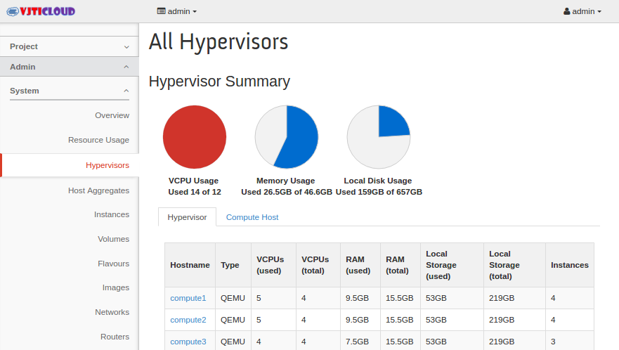View the hypervisor summary.- Host Aggregates:
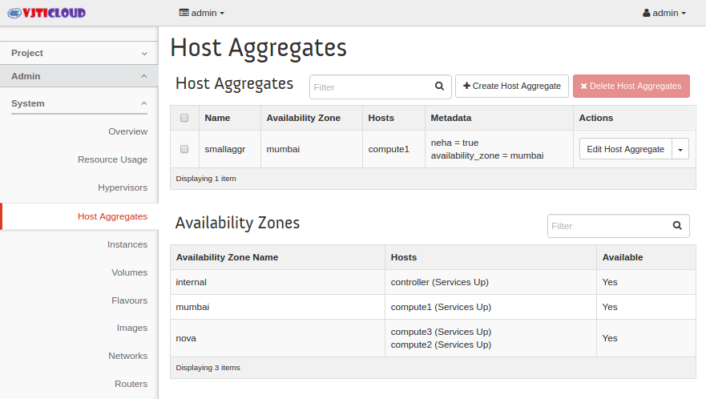View, create, and edit host aggregates. View the list of availability zones.- Instances:
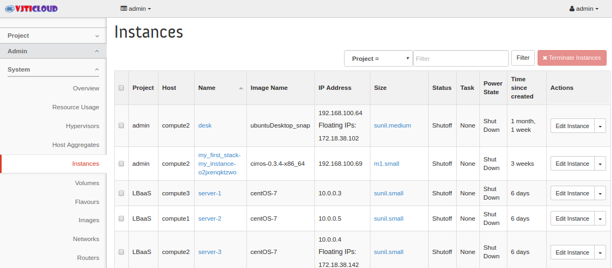View, pause, resume, suspend, migrate, soft or hard reboot, and delete running instances that belong to users of some, but not all, projects. Also, view the log for an instance or access an instance through VNC.- Volumes:
- Use the following tabs to complete these tasks:
- Volumes:
View, create, manage, and delete volumes.
- Volume Types:
View, create, manage, and delete volume types.
- Volume Snapshots:
View, manage, and delete volume snapshots.
- Flavors:
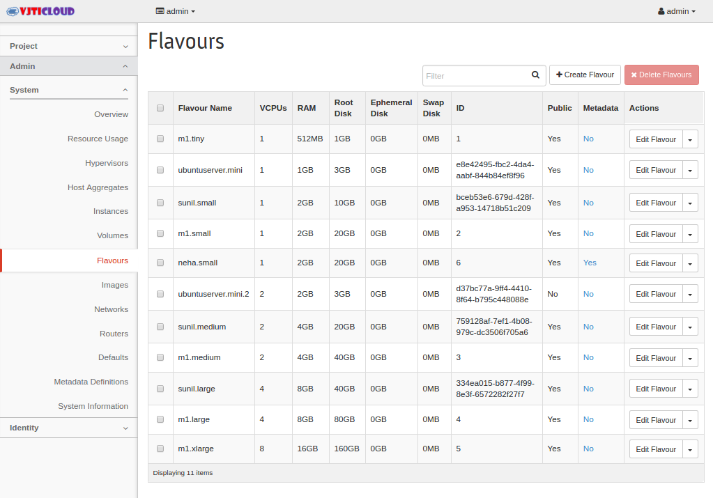View, create, edit, view extra specifications for, and delete flavors. A flavor is the size of an instance.- Images:
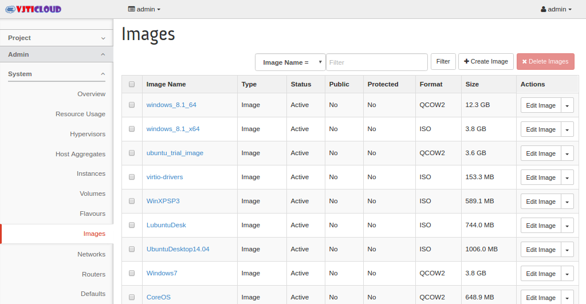View, create, edit properties for, and delete custom images.- Networks:
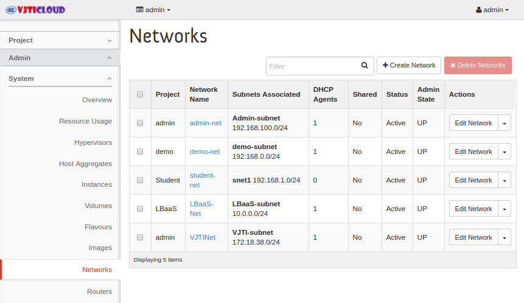View, create, edit properties for, and delete networks.- Routers:
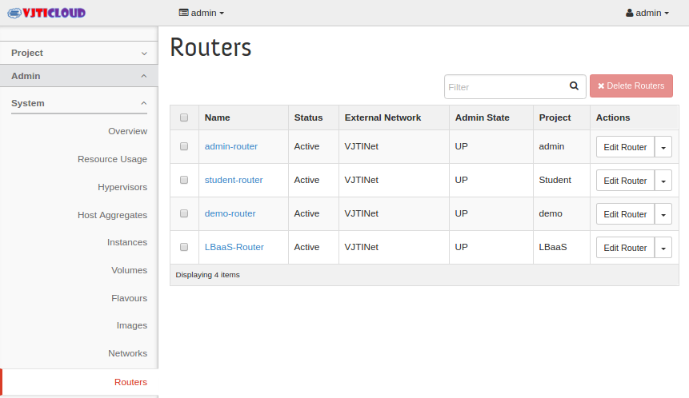View, create, edit properties for, and delete routers.- Defaults:
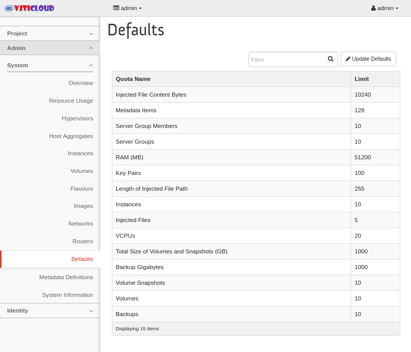View default quota values. Quotas are hard-coded in OpenStack Compute and define the maximum allowable size and number of resources.- Metadata Definitions:
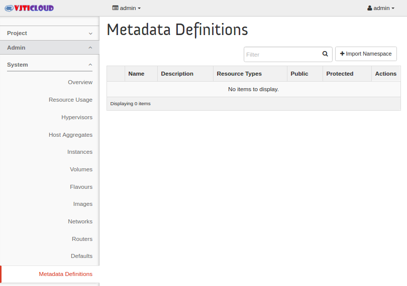Import namespace and view the metadata information.- System Information:
Use the following tabs to view the service information: - Services:
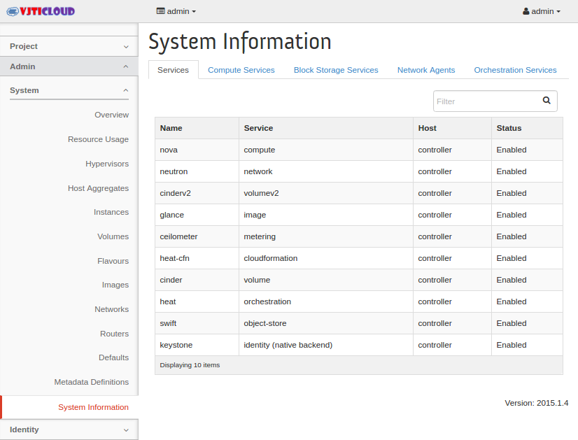View a list of the services.- Compute Services:
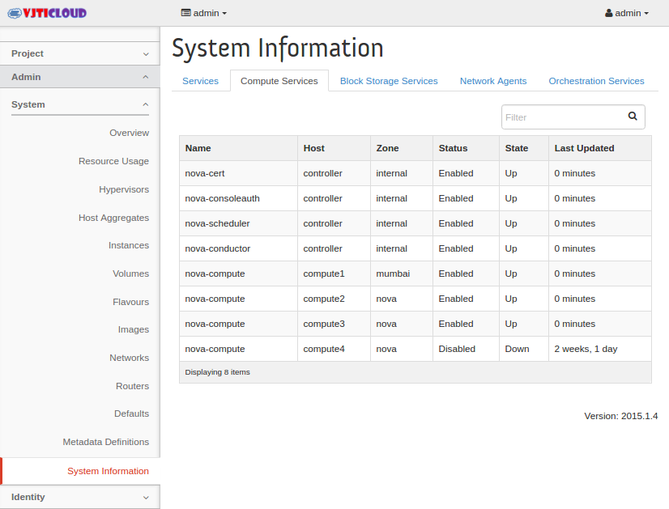View a list of all Compute services.
- Block Storage Services:
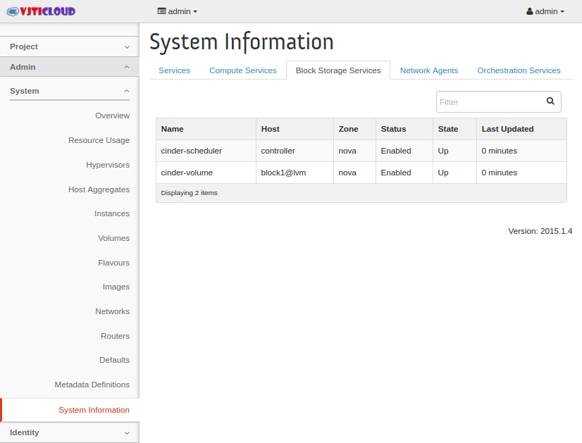View a list of all Block Storage services.
- Network Agents:
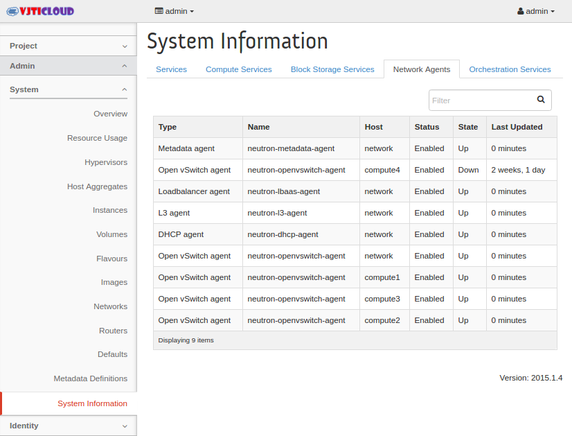View the network agents.
- Orchestration Services:
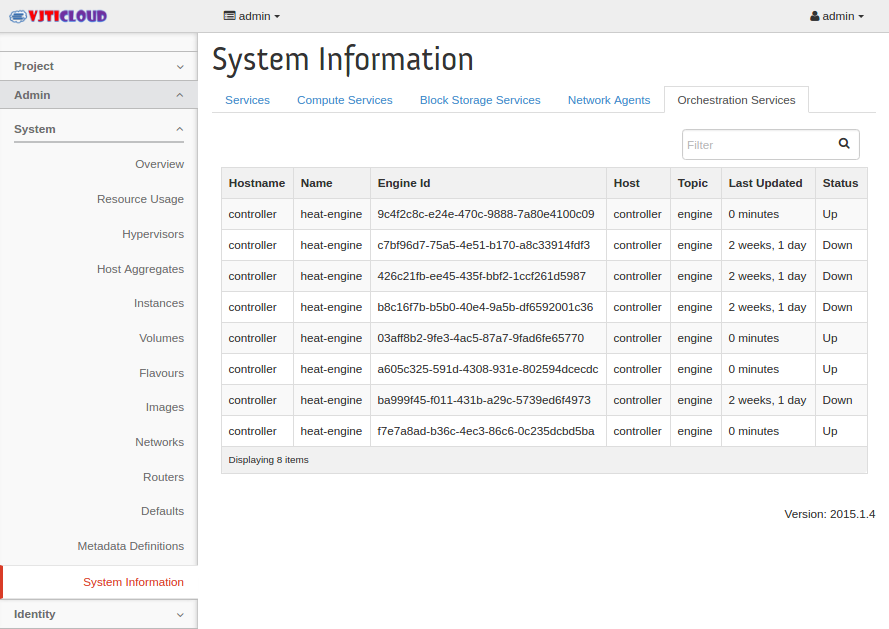View a list of all Orchestration services.